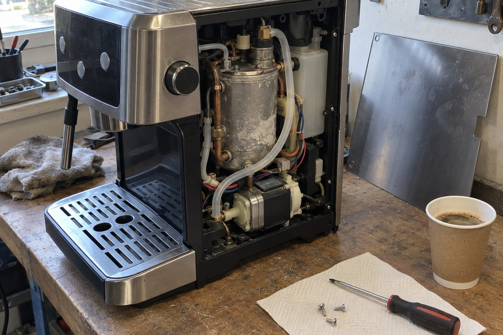

Ремонт бытовой техники
Стиральная не сливает и стоит с водой: чаще засор фильтра или насос, меняем в день обращения. Гремит на отжиме: подшипники, это 1–2 дня. Посудомоечная не набирает воду или стоит с лужей: заливной клапан, насос и датчик уровня; плохо отмывает и не сушит — обычно нагреватель. Крупную технику смотрим у вас дома, везти не нужно.
Гудит, а кофе не льёт: помпа или воздух в тракте. Кофе чуть тёплый и слабый напор: накипь в бойлере, чистим в день обращения. Течёт мимо рожка: уплотнители заварочного блока, 1–2 дня.
Пропала тяга или пахнет горелым: щётки двигателя, часто спасаем сам двигатель. У роботов меняем аккумулятор и боковые щётки, чистим датчики.
Искрит и пахнет: прогорела слюдяная пластина, меняем при вас. Крутится, но не греет: магнетрон или высоковольтный диод, 1–2 дня.
Парогенератор не даёт пар или плюётся водой: накипь в бойлере и помпа. Не греет: термостат или ТЭН. Промываем систему, меняем изношенное. Мелкую технику берём, если ремонт выходит заметно дешевле новой. Если нет, скажем сразу на диагностике, она бесплатная.